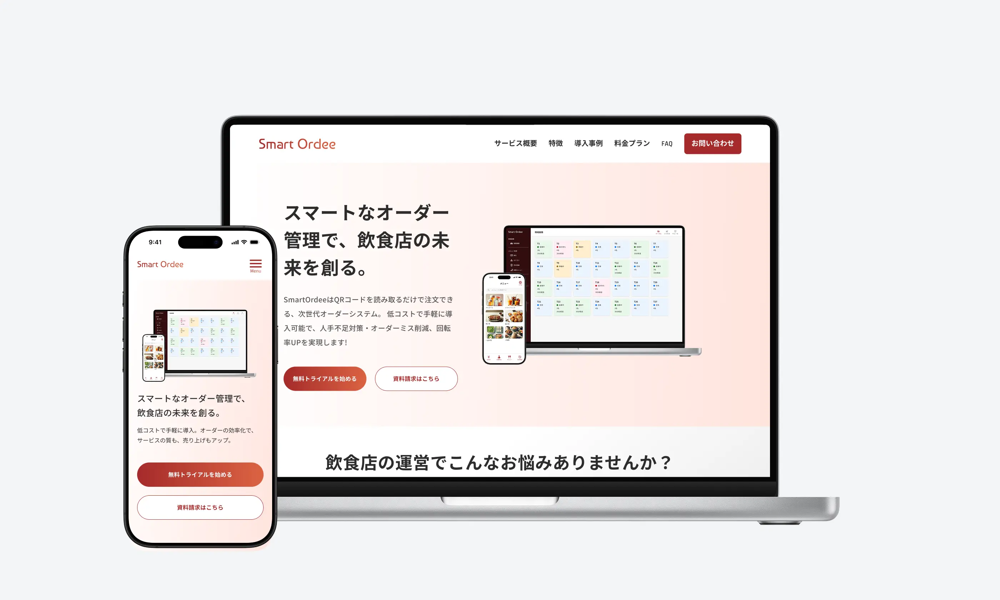
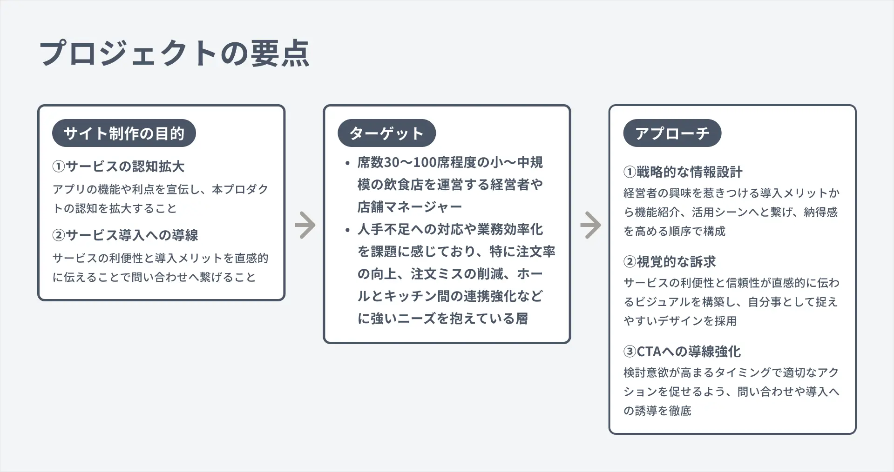
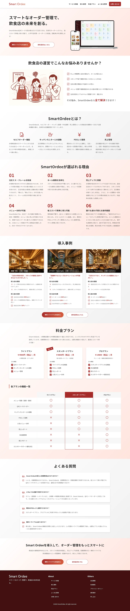
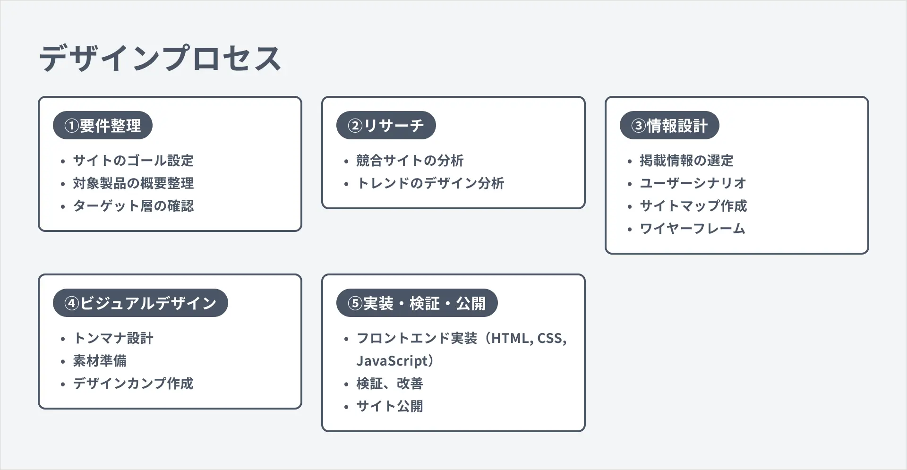
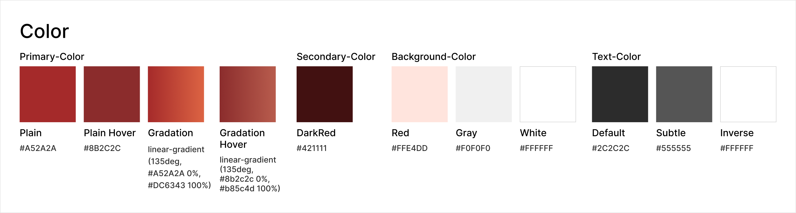
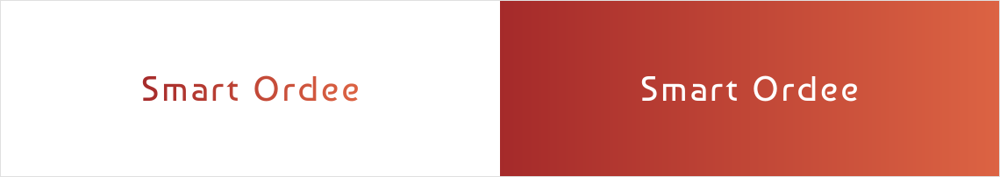

SmartOrdeeアプリ紹介LP
- LP
- 自主制作

このLPは、飲食店向けQRコードオーダーシステム「SmartOrdee」を紹介するためのページです。 人手不足や業務効率化に課題を抱える飲食店オーナーに向けて、サービスの機能や魅力を分かりやすく伝え、無料トライアルや資料請求へ繋げることを目的としています。
- カテゴリー：LP
- 制作種別：自主制作
- 担当領域：企画、デザイン、コーディング
- 使用ツール：Figma, HTML, CSS(Sass), JavaScript, git, Github
- 制作期間：3週間
プロジェクト概要
本サイトは、飲食店のオペレーション効率化を支援するQRコードオーダーシステム「SmartOrdee」の紹介用ランディングページです。 人手不足や注文ミスなどの課題を抱える飲食店の経営者やオーナーを主要ターゲットに据え、サービスの利便性と導入メリットを直感的に伝えることで、認知拡大および導入のきっかけとなる問い合わせへ繋げることを目的に制作しました。

最終成果物

SmartOrdee紹介LPはこちら
飲食店向けSass型オーダー管理システム「SmartOrdee」の紹介ページ
デザインプロセス
デザインプロセスは以下の手順で進めました。以下の章で詳細なプロセスを紹介します。

1. 要件整理
本プロジェクトは、飲食店のオペレーションを効率化する架空のQRコードオーダーシステム「SmartOrdee」の紹介用ランディングページです。 サービスの新規開発に伴い、その利便性を広く周知することで認知度を高め、導入検討店舗の獲得および利用拡大を図るため制作しました。
対象製品の概要整理
SmartOrdeeは、来店客のスマートフォンを活用して注文から会計までを完結させる、飲食店向けのQRコードオーダーシステムです。 専用端末が不要なため導入コストを抑えられるほか、多言語対応やオンライン決済機能により、人手不足の解消とインバウンド対応を同時に実現します。 注文・会計業務の自動化を通じて、オペレーションの効率化、注文ミスの防止、さらには客単価や回転率の向上を支援するデジタルソリューションです。
サイト制作の目的
- サービスの認知拡大： アプリの機能や利点を宣伝し、本プロダクトの認知を拡大すること
- サービス導入への導線： サービスの利便性と導入メリットを伝えることで問合せや導入に繋げること
ターゲット層
席数30～100席程度の小〜中規模の飲食店を運営する経営者や店舗マネージャー。 また、人手不足への対応や業務効率化を課題に感じており、特に注文率の向上、注文ミスの削減、ホールとキッチン間の連携強化などに強いニーズを抱えている層。
2. リサーチ
次に、リサーチとして、競合サイトの分析および、デザイントレンドの分析、参考となるサイトの収集を行いました。
競合サイトの分析
高く評価されている類似のモバイルオーダーサービスやアプリ紹介LPを複数選定し、構成や訴求文言を分析しました。ユーザーを迷わせない情報の優先順位や、信頼感を与えるデザインの共通項を抽出。それらを本プロジェクトの設計に反映させることで、説得力の高いコンテンツ構成を目指しました。
トレンド分析・リファレンス集め
サービスのコンセプトに合わせ、モダンかつ信頼感のあるビジュアルデザインを中心に、最新のLPトレンドを調査・分析しました。 テクノロジーの利便性を感じさせるクリーンな配色や、直感的な操作性を想起させるUIパーツの活用事例を収集。それらの要素を言語化・整理することで、ターゲットの期待に応える視覚表現の方向性を定義しました。
3. 情報設計
これまでのリサーチ結果を基に、ターゲットの懸念を払拭し、期待を高めるために必要な情報を厳選しました。 ユーザーが抱える課題から解決、そして導入へと至る「ユーザーシナリオ」を策定。 それに基づき、情報の優先順位と最適な配置を検討したワイヤフレームを作成し、コンバージョンを最大化するための論理的なサイト構成を具体化しました。
具体的な構成として、まずファーストビューでは、アプリのUIビジュアルとキャッチコピーを用い、サービスの概要を直感的に伝えることでユーザーの関心を引きます。 続いて「こんなお悩みはありませんか？」というセクションを設け、ターゲット層が抱えるペインやニーズを具体的に列挙し、課題共感を促します。 その後、SmartOrdeeの基本的な機能を紹介し、さらに導入によるメリットを効果的な訴求ポイントとして整理して提示します。
また、導入事例では、実際に導入した店舗における具体的な成果を定量的なデータを交えて紹介し、サービスの信頼性と導入効果を実感してもらう構成としています。 料金プランは3種類を用意していますが、最も推奨するのは中間価格帯のスタンダードプランであり、「一番人気」と強調することで機能面・価格面ともに最適な選択肢であることを印象づけています。 残りの2つのプランは選択肢として提示することで、ユーザーに自ら選択したという納得感を持たせる設計としています。
さらに、よくある質問のセクションでユーザーの疑問を解消し、最後にCTAとして無料トライアル申し込みと資料請求の導線を配置。 加えて、無料トライアルや資料請求のCVボタンは各セクション内にも適宜配置し、ヘッダーにも問い合わせボタンを固定表示することで、ユーザーが興味を持った瞬間に即アクションへ繋げられるよう導線設計を行っています。
4. ビジュアルデザイン
レイアウトはシンプルで視認性の高い1カラム構成を採用し、各セクションを縦に積み重ねることで、ユーザーが迷わず情報を順に読み進められるようにしました。 また、全体に十分な余白を設けることで情報を整理し、視覚的な負担を軽減しています。 加えて、テキスト偏重にならないように、適度にイラストや写真を用いることで、読んでいて疲れない構成にしています。
カラーに関しては、アプリケーションで使用しているプライマリーカラーを踏襲し、ブランドの一貫性を重視しています。 プライマリーカラーには、飲食店での利用を想定し、食欲を損なわず、かつモダンで洗練された印象を与えることを目的として、ワインレッド（#A52A2A）を採用しています。 さらに、このプライマリーカラーの諧調（明度・彩度のバリエーション）から、セカンダリーカラーやバックグラウンドカラーを選定することで、 全体の統一感を保ちつつ、情報の階層や視覚的コントラストを表現しています。 また、全体を通してWCAG基準に準拠したコントラスト比を保ち、視認性やアクセシビリティにも配慮した設計としています。

ロゴ

最終的に出来上がったデザインカンプは以下。
5. 実装・公開・検証改善
作成したデザインカンプを基に、HTML/CSS(Sass)およびJavaScriptを用いて実装しました。 あらゆる閲覧環境で最適な体験を提供するため、モバイルファーストのレスポンシブ対応に加え、アクセシビリティや表示速度、視認性の多角的な検証を実施。 特定デバイスでのレイアウト崩れや読み込み負荷などの課題を洗い出し、細部まで改善を繰り返すことで、実用性と品質を兼ね備えた状態で公開しました。
SmartOrdee紹介LPはこちら
飲食店向けSass型オーダー管理システム「SmartOrdee」の紹介ページ